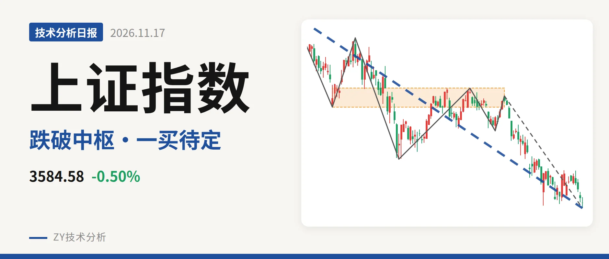
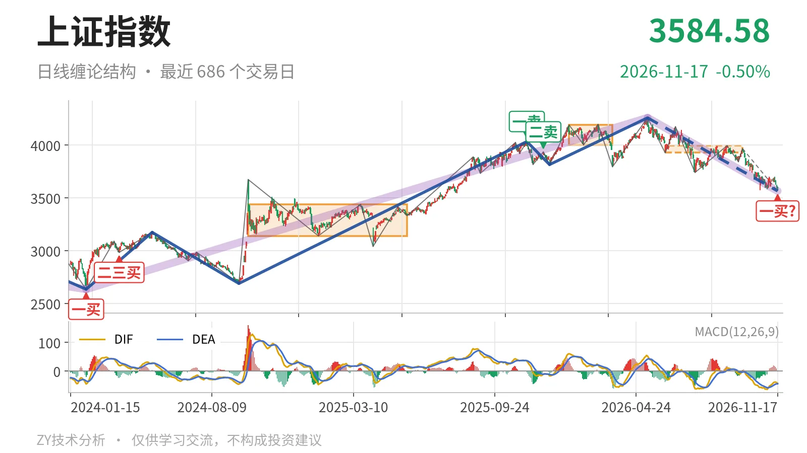
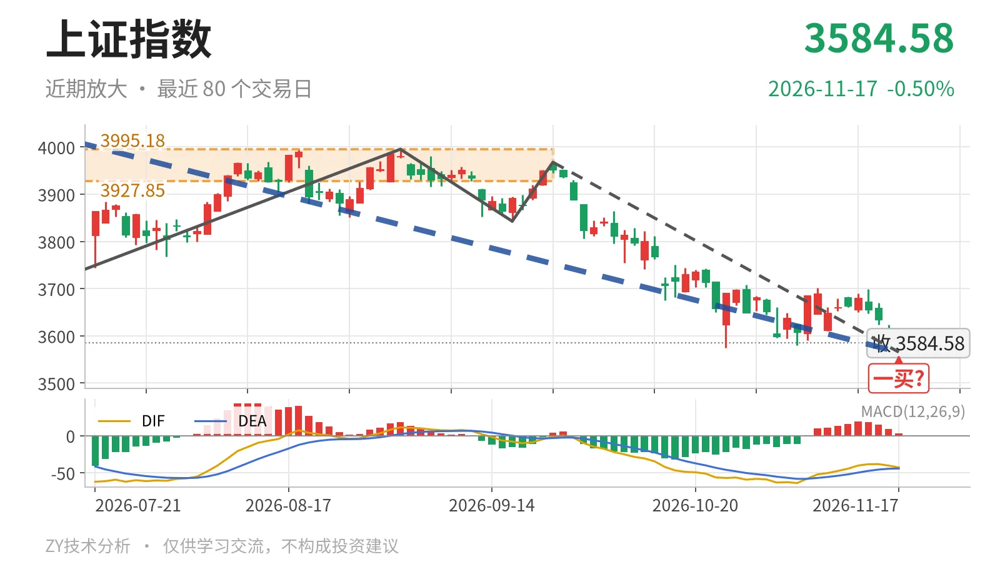

上证指数｜跌破3928中枢下沿，下跌笔无背驰

最近日线中枢 3927.85—3995.18点，收盘位于中枢之下
一句话：跌破最近中枢下沿，最后一笔绿柱面积未减，暂定一买尚在延续
📉 走势结构：上涨后回撤，日线下跌段未完成
5月14日以来的日线下跌段没有结束，当前处于2024年2月5日至2026年5月14日上涨走势之后的回撤。该更大级别上涨段低点2635.09点、高点4258.86点，未出现新低破坏，但5月14日至11月17日下跌约16.3%，已使日线线段进入下跌延续。最近三段线段中，2025年12月16日至2026年5月14日上涨线段已经结束，5月14日开始的下跌线段含7笔，仍没有完成，且低点3565.59点已是5月14日以来新低。

📍 中枢与位置：跌破最近中枢下沿，中枢下移
最新收盘3584.58点已跌破6月8日至9月22日日线笔中枢（3927.85—3995.18点）下沿，低于下沿约8.7%。该中枢尚未完成，前一个1月14日至3月23日中枢为4002.78—4190.87点，中枢下沿由4002.78点下移到3927.85点，中轴也由4096.82点下移到3961.51点。最新价在最近中枢下方，日线MACD的DIF仍在零轴之下，离开中枢后尚未回抽。
🧭 买卖点：11月17日低点只是暂定一买
11月17日盘中低点3565.59点被标为一买，但所在9月22日至11月17日下跌笔没有结束，因此这是暂定的一买，会随这一笔延续而变化。此前2025年11月14日一卖4034.08点、2025年12月8日二卖3936.31点，之后被5月14日4258.86点新高覆盖，只属日线笔级别结构。2024年2月5日一买2635.09点仍是在下方更远的日线结构点。

📊 背驰：最后一笔新低但力度未减
最关键的对比是9月22日至11月17日下跌笔与6月23日至7月20日下跌笔。当前笔低点3565.59点创出5月14日以来新低，但其绿柱面积444，大于前一段的289；DIF低点-64.0，低于前一段的-61.8。这不是“新低不新弱”，而是新低且力度继续放大，因此暂定一买尚未得到同笔绿柱收缩支持。
🚧 关键位置观察：反抽看3928点附近
反抽若回不到3928点上方，结构上构成日线三卖；重新站上3995点，则5月14日以来下跌更可能只是中枢扩展。压力看3928点附近与3995点附近，下方若继续低于3565.59点，当前下跌笔就还在延续。结构偏弱，弱在日线中枢下移、最新价跌破中枢下沿，且最后一笔绿柱面积未收缩。
⚠️ 本文为基于公开行情数据的缠论技术结构记录，由程序自动计算并生成，仅供学习交流，不构成任何投资建议。市场有风险，投资需谨慎。